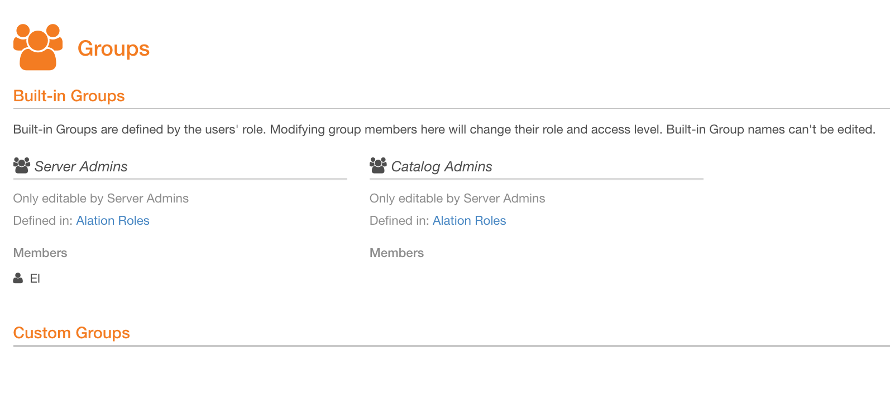
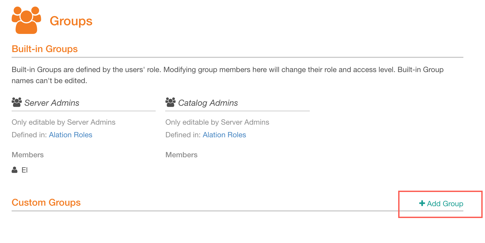
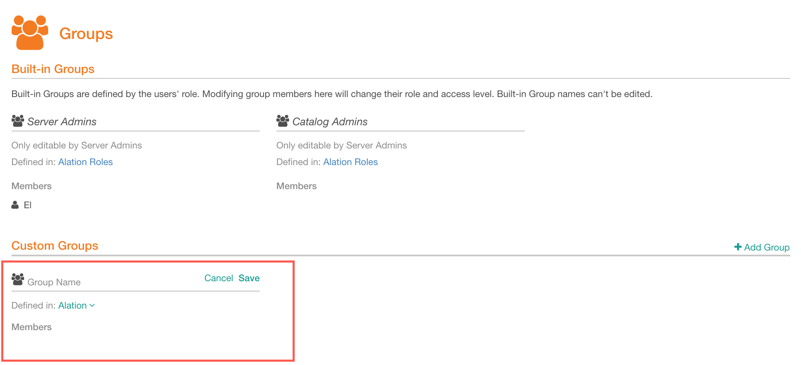
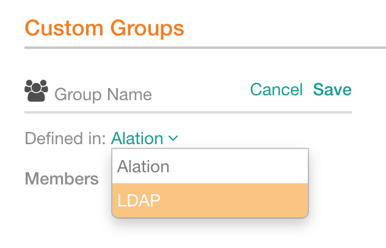
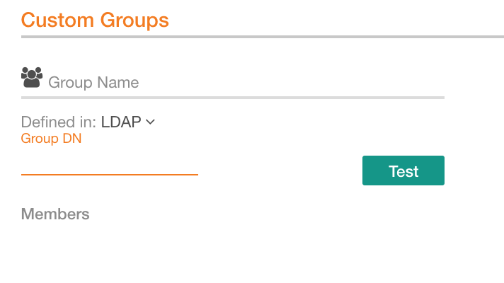
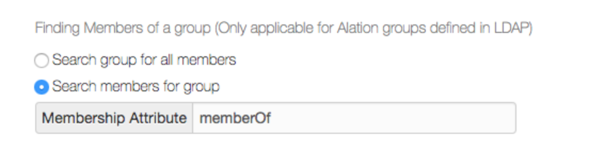

Configure LDAP Groups¶
Alation Cloud Service Applies to Alation Cloud Service instances of Alation
Customer Managed Applies to customer-managed instances of Alation
When Alation is configured to use LDAP authentication, you can create groups that use the Group type Defined in LDAP. LDAP Groups will be auto-synchronized with the groups in the LDAP Directory of your organization. Alation users who belong to the corresponding group in your LDAP directory, will be placed into the corresponding LDAP Group in Alation, based on Group DN that is specified in the configuration of the Group.
Note
Using LDAP Groups in Alation requires that Bind DN should be set in the LDAP settings on the Authentication tab to enable searching for groups. Before you set up LDAP Groups in Alation, make sure that the Bind DN has been specified. See User Authentication with LDAP.
To create LDAP Groups in Alation,
Log in to Alation as a Server Admin or a Catalog Admin and go to the Groups page:
Hover over Custom Groups to reveal the Add Group link on the right:
Click Add Group. This will add a new custom group in the Edit mode:
In the Group Name field, specify a name for the group you are creating.
From the Defined in list, select LDAP:
The Alation group requires a full Distinguished Name (DN) of the corresponding LDAP group. For example:
cn=Engineering,ou=Groups,dc=alation,dc=com. Specify the DN in the Group DN field:Click Test to test the group configuration.
Release 2021.1 and later: map an Alation role onto the group using the Mapped to list. Mapping a role onto the group is optional if you are using the default method of role assignment. However, it is required if you are going to enable role assignment using custom groups. This action is available to Server Admins only, and will appear as disabled to a Catalog Admin.
Note
For details on role assignment using custom groups, see Use Custom Groups to Assign User Roles.
{kind=link}
{kind=link}
{kind=link}
{kind=link}
{kind=link}
Click Save to save the group.
When a new user logs in to Alation for the first time authenticating against your LDAP server, their group membership in Alation will be automatically updated and the corresponding LDAP-based group will show this user in the list of members.
Details on LDAP Group Sync in Alation¶
Alation creates a flat list of members for a group.
Note
If an organization has groups and subgroups, Alation drills down to the level of a subgroup to find all users of the group and populates the list of members.
Alation supports two methods to determine group membership. This is configurable on the Authentication tab:
{kind=link}
Search group for all members Alation queries the LDAP Server to get attributes of the group DN specified. Members of the group are inferred by processing the member DNs in the “memberOf” attribute (or whichever is configured as the Membership Attribute) on the group.
Search members for group This is the default option to find members of a group. Alation constructs a filter to query the LDAP server for getting all members who belong to a group. Alation checks if the member DN matches the “memberOf” (or whichever is configured as the Membership Attribute).
The Admin can either leave the default option or use Search group for all members option.
Group Membership Updates¶
Alation queries the LDAP server every 15 minutes (default) to periodically update the details of group membership. In addition, group membership is updated every time a group Defined in LDAP is re-saved in the UI or when a user logs in to Alation using LDAP authentication.
You can use the dedicated alation_conf parameter to change the frequency of the auto-sync. Replace the default value 15 with any suitable number of minutes.
Release 2021.3 and Newer¶
Note
Alation Cloud Service customers can request server configuration changes through Alation Support.
Enter the Alation shell:
sudo /etc/init.d/alation shell
Set the value:
alation_conf user_group_management.sync_from_directory_provider.ldap.group_sync_period -s <value_in_minutes>
Example:
alation_conf user_group_management.sync_from_directory_provider.ldap.group_sync_period -s 20
Restart Web:
alation_supervisor restart web:*
Releases V R7 - 2021.2.x¶
SSH to the host and enter the Alation shell:
sudo /etc/init.d/alation shell
Set the value:
alation_conf alation.authentication.ldap.group_sync_period -s <value_in_minutes>
Example:
alation_conf alation.authentication.ldap.group_sync_period -s 20
Restart Web:
alation_supervisor restart web:*
Error Logging¶
Paths in this section are given inside the Alation Chroot: can be accessed from the Alation shell.
Issues with the periodic LDAP group sync are logged in:
/opt/alation/site/logs/celery-default_error.log
Trace and debug information related to issues with LDAP login or configuration can be found in:
/opt/alation/site/logs/alation-error.log
/opt/alation/site/logs/alation-debug.log
/opt/alation/site/logs/alation-info.log
Known Issues¶
After saving a group defined in LDAP (on the Groups page), the “<number of users> not in Alation” line does not currently appear until a page refresh is done or the page is subsequently loaded.
Cache Membership¶
The LDAP group member relationship in Alation is stored similar to regular Alation groups and users, which means this information is cached. You may see a delay in users appearing in their respective groups or in changes to be applied. This delay would typically be about 15 minutes (or the refresh time you have configured) that is required for searching and synchronizing group members between the systems.